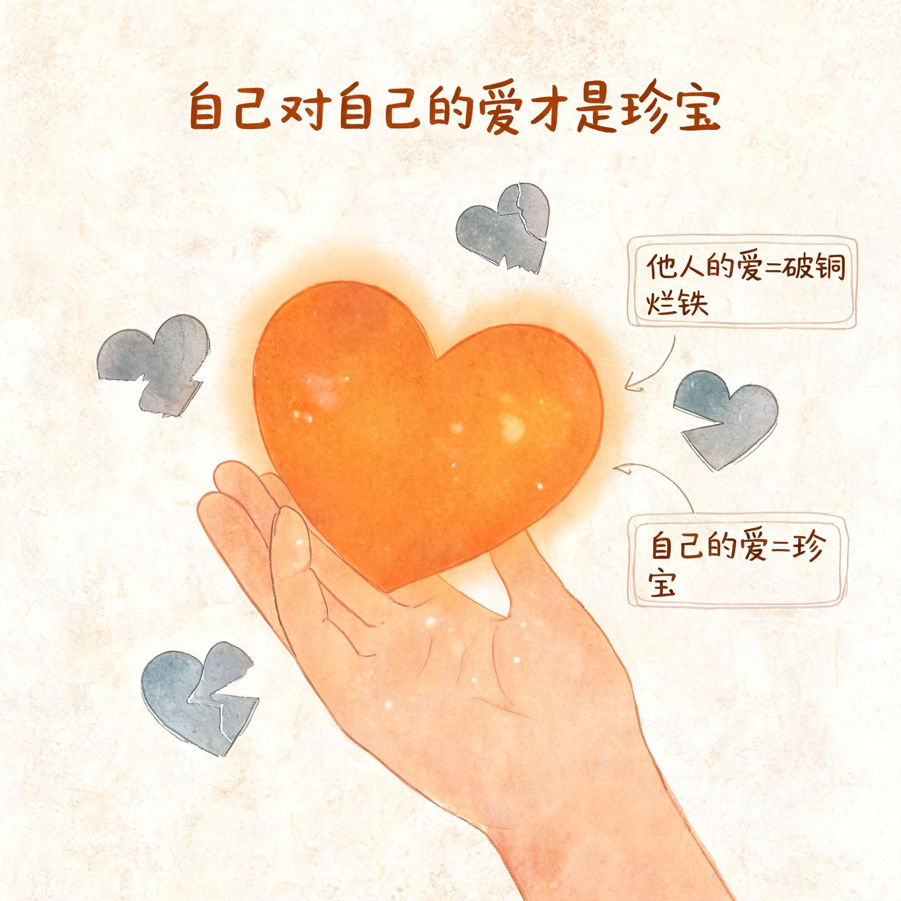
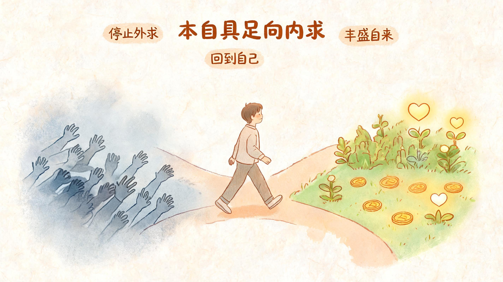
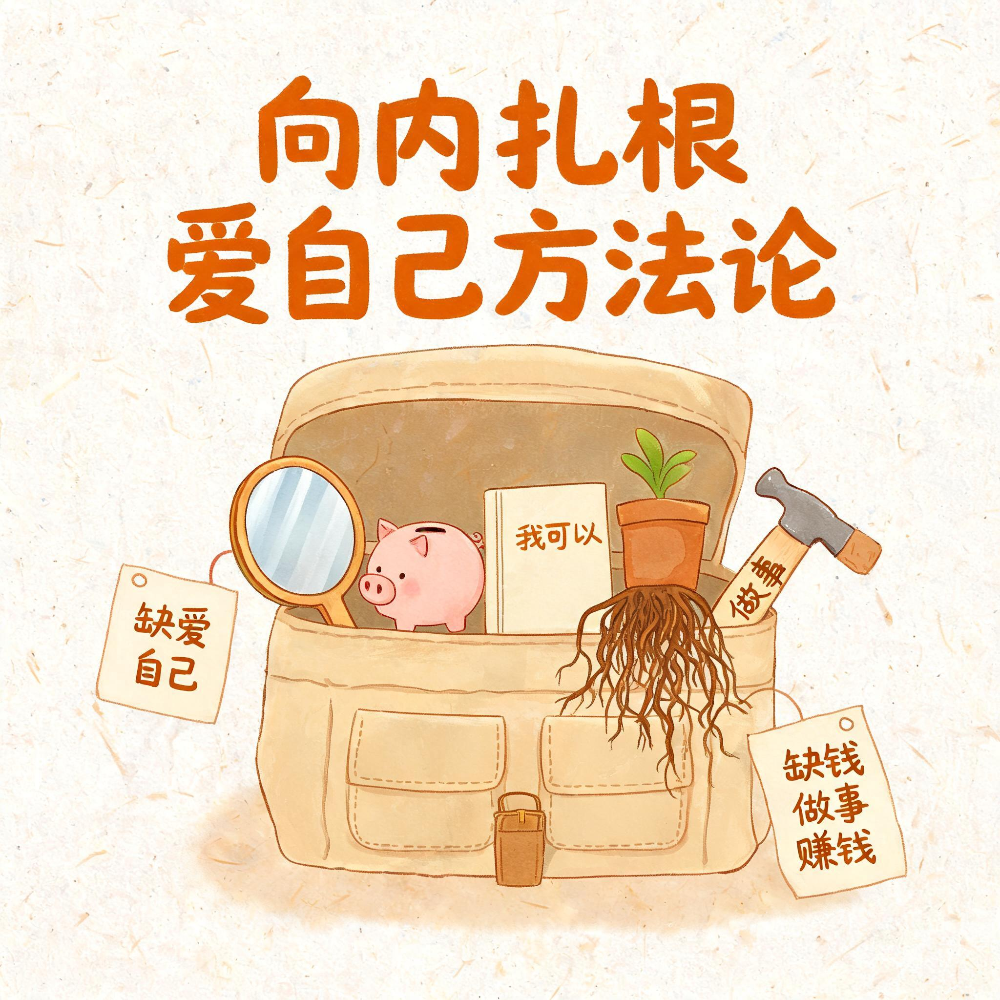
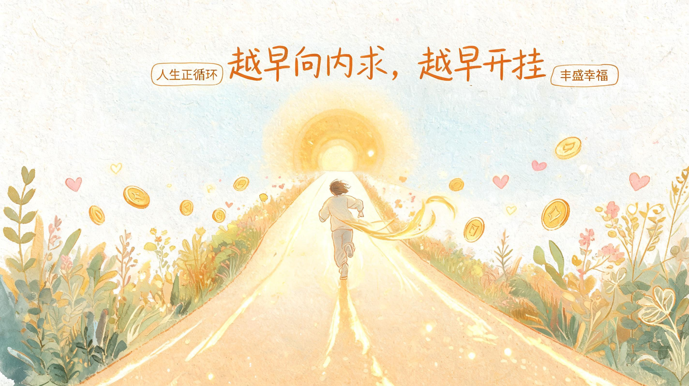

自己对自己的爱，才是珍宝

“他人的爱是破铜烂铁，他人的爱不算什么，彻底不屑于他人的爱，自己对自己的爱才是珍宝。”
一切的卡点是：太把别人的爱当回事，却不把自己对自己的爱当回事放第一。
▎别人的爱为什么不值钱
- 任何人的爱都不够纯粹、不稳定、不可靠，所以不值得你太当回事。
- 任何人的爱都取代不了缺位的自爱，只有自己能真正填补那个缺口。
- 永远置顶自己对自己的爱的位置，永远把自爱排第一，人生首先要做的就是爱自己。
“喜欢自己，比被别人喜欢和喜欢别人重要一万倍一亿倍。”
▎受伤的真正意义
受伤不是惩罚，而是提醒。爱的目的，是通过受伤让你看到：任何人的爱都不会超过自爱，从而学会停止爱别人、停止向别人索取爱。
别人那里没有你要的东西，所以向外求爱永远求而不得。回头爱自己，就是向内求，这是速效解药。
💡 一句话总结
求财者风生水起
求被爱者一事无成郁郁寡欢
自爱者财爱双收
向外求，是没有用的

“向外求是没有用的。外面的都是虚的，都是泡沫。”
外求来的永远无法得到真正满足。从外界抓东西不停地补，只会越补越空。
▎为什么要彻底放弃外求
- 寄望于别人是没有意义的。总寄望于别人，才会永远停留在原地。
- 外界没有你想抓取的东西，你想要的都在内里。
- 向外求永远会感觉虚，向内求才能感觉到扎扎实实。
- 寄望于别人便会忘记寄望于自己；捡起自爱，无敌自爱是解药。
人只能向内求，只能靠自己。钱和爱也只能自己给自己。
“缺爱就爱自己，缺钱就赚钱。”
这段总结：彻底放弃外求，因为意识到向外求没用。转而只极致内求。
向内扎根：爱自己方法论

“任何时候都一定把对爱的期许、被爱的需要、赚钱的责任，只完完全全放在自己身上。”
你之所以每天没做什么就很累、能量低、能量外漏、感到内心匮乏空虚，是因为你正在不停向外求、与外界纠缠、因此内耗。
▎转机：从意识到转向
这时要清醒地意识到：他人的爱总是不够不可靠的，而自爱才是珍宝。转而竭力向内求、向内扎根，才能彻底弥补空虚和匮乏。
▎实操方法
缺爱就爱自己。自己给自己安全感、肯定和照顾。
缺钱就做事、赚钱。把精力收回来创造价值。
狠狠爱自己，直到发展出真正爱自己的能力。
“缺爱疯狂爱自己，缺钱疯狂做事疯狂赚钱。”
这是非常重要的实操方法，能一秒走出内耗。
▎向内求的好处
- 向内求放弃期待他人，会无比强大、无比自由、节省时间精力、无比有行动力、无比稳、瞬间平静、不再痛苦、能量聚焦。
- 向外求只有求而不得的痛苦，开始向内求会无敌爽、无敌稳、无敌强、无敌自由。
- 向内求得的每一个瞬间，都会转化为内在的力量和丰盛。
- 向内求力量感的来源都是我自己，从内心获得力量，无敌自由、无敌有安全感。
这段总结：转而只极致彻底向内求。向外求是二类的人生，向内求是一类的人生。
关于自爱
“钱会顺着内心缺爱、不自爱的缺口，不断向外流失。”
钱和爱是同一种能量的两种表现。内心有缺口，爱留不住，钱也留不住。
▎关于自爱的三个认知
钱会顺着内心缺爱不自爱的缺口不断向外流失。想要不缺爱、留住钱、吸引钱，就要把对爱的期许、被爱的需要、赚钱的责任完完全全放在自己身上，直到长出向内求的能力。
老天会精准地惩罚每一个不自己爱自己的人。其实是在用痛苦逼你回家，完成向内求的课题。
你是这世上爱你的第一人，其余的人都只会是第二爱你的人。
这世上唯一正确的路径就是向内求。
向内求自强自立自信自爱是真理。
为什么“任何时候都一定”只向内求？
因为向内求是“唯一可行的”“稳稳地”能够“真正”弥补缺爱缺钱的方式。
▎三个原因
你会变强
向内求会让你自强自立、有掌控感，所向披靡，平静，无所吊谓他人。向内求是百益无一害的道路，是最爽最有力量的道路，是永恒正确的道路，是最终抵达的终点。
你会变满
向内求时内心会变得非常饱满和充实，不再空洞匮乏。它是唯一可行的、稳稳的、能够真正弥补缺钱缺爱的道路。
匮乏会终止
只有长出向内求的能力，这种对爱的渴求和缺钱缺爱的匮乏状态才会彻底终止。
向外求没用。你过去一直在向外求上浪费了太多时间。这就是向内求的意义。
🌟 放弃外求会神清气爽，信我所有内耗都会消失。
彻底向内求会很爽、很有力量、很自由、干劲满满。
你明白任何人的爱都不会超过你自己
从此，任何时候都会把对爱的期许、被爱的需要、赚钱的责任，只完完全全放在自己身上。
当你真正放下外求，把责任收回到自己身上，一切都会自然发生。
你自然会向内求、向内找寻支持和爱，自然会自己爱自己。你的破碎和缺爱、向外渴求爱和求而不得的痛苦自然都会消失，因为你不求了。
你自然会有“你爱不爱我我都无所谓”的心态，不屑于任何他者之爱。
你自然会努力工作、专心赚钱，让自己生活事业越过越好；自然会特别想出人头地，自然会戾气消失。
你自然会深刻领悟：向内求是唯一可行的、稳稳的、能够真正弥补缺钱缺爱的方式。（你只是之前没有意识到这点）
向内求内心会饱满充实对应：
1️⃣ 唯有一切向内求才能得到真正满足；
2️⃣ 唯有发展出向内求的能力，对爱的渴求才会消失。
全文核心

越早彻底领悟向外求没用，越早放弃外求，越早开始向内求耕耘自己的人生，人生就会越早开始开挂。
“当你放弃外求，不断不断地一直向内求，你一定会得到属于你的丰盛和幸福。”🏃♀️